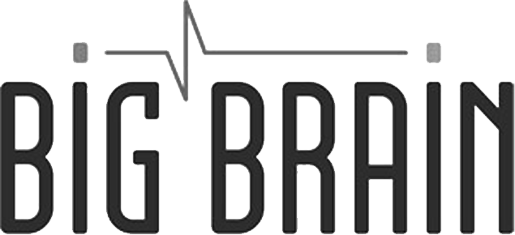
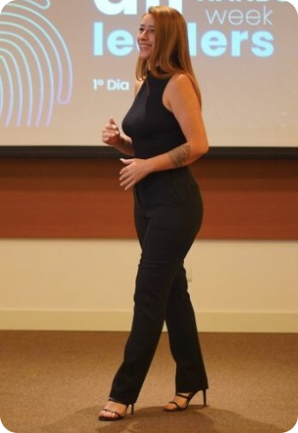
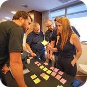
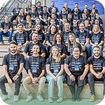
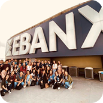
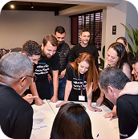
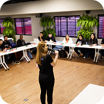
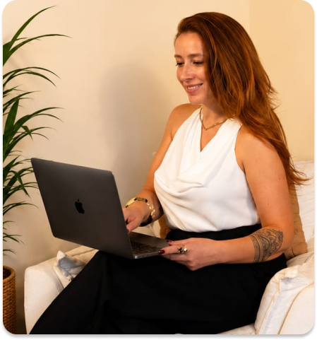

Remuneração & Incentivos
Planos de remuneração, benefícios e incentivos alinhados ao crescimento.
COMO ATUO
Leitura estratégica do negócio e dos desafios de Pessoas e Cultura, atuando em parceria com founders, diretores e RH para compreender a estratégia da empresa, identificar prioridades, mapear gargalos e construir um roadmap alinhado ao momento do negócio e à sua visão de futuro.
Saiba maisImplementação das frentes priorizadas de Pessoas e Cultura, com estruturação de processos, políticas, ferramentas e materiais, desenvolvimento de lideranças e transferência de conhecimento para o RH interno, garantindo autonomia, continuidade e evolução da gestão de pessoas.
Saiba maisCondução estratégica de processos de atração e seleção para posições de nível médio até cargos de liderança e executivos, incluindo profissionais de tecnologia. Atuação desde o alinhamento do perfil, mapeamento de mercado e busca ativa de talentos até a condução de entrevistas, avaliação de aderência técnica e cultural, apoio na elaboração da oferta e acompanhamento do processo de contratação.
Saiba maisCLIENTES E CONEXÕES
De forma estruturada e fundamentada na realidade de cada negócio, desenvolvo estratégias, processos e ferramentas de gestão de pessoas que sustentam o crescimento com resultado. Atuo diretamente ao lado de fundadores e times de gente, entregando modelos de gestão práticos que ajudam a sustentar a cultura e os resultados no longo prazo.
Clientes e Conexões
Atuo de forma prática, a partir do contato direto com fundadores e líderes, entendendo o momento e traduzindo estratégias de pessoas e cultura em resultados concretos para o negócio.

INICIATIVAS QUE LIDERO E DESENVOLVO

Planos de remuneração, benefícios e incentivos alinhados ao crescimento.
Processos de recrutamento mais claros, consistentes e conectados à cultura.
Mapeamos a cultura atual e construímos guias para fortalecer clareza, consistência e alinhamento entre discurso e prática.
Ritos e ferramentas para apoiar lideranças na gestão de pessoas.
Processos de avaliação conectados à estratégia, cultura e desenvolvimento.
Jornadas de entrada para integrar pessoas à cultura e ao negócio.
Práticas para fortalecer ambientes seguros, responsáveis e sustentáveis.
PARA QUEM
Os negócios crescem, porém, sem intencionalidade na construção de cultura, liderança e processos, comprometendo o alinhamento, a gestão de talentos e a consistência do crescimento.





CASES
CLIENTE
ESTRUTURAÇÃO DE PESSOAS E CULTURA
EM EMPRESAS DE TECNOLOGIA
Na atuação com BigBrain e Reeducation, apoiei a criação e estruturação de iniciativas voltadas à gestão de pessoas, cultura, liderança e processos de RH. A experiência envolveu olhar para momentos de crescimento e organização interna, conectando pessoas, liderança, processos e objetivos de negócio de forma mais consistente.
“Seus diferenciais estão em organizar fundações sólidas, fomentar uma cultura viva dentro da organização e desenhar mecanismos de gestão de pessoas.”
Acompanhei a atuação na construção e no fortalecimento da área de Pessoas e Cultura, formando um time sólido e conduzindo frentes relevantes com consistência. Destaco especialmente sua visão estratégica, sua escuta ativa e sua capacidade de conectar o desenvolvimento de pessoas às necessidades reais do negócio.“Empatia e escuta ativa no ambiente de trabalho.”
Profissional com forte compreensão das relações humanas no ambiente de trabalho, atuando em Pessoas e Cultura de forma estratégica, conectando processos, cultura e bem-estar ao desempenho dos indivíduos e da organização.CLIENTE
CULTURA, LIDERANÇA E DESENVOLVIMENTO EM UM NEGÓCIO EDUCACIONAL ESCALÁVEL
Vamos conversarNa Kenzie Academy Brasil, atuei com Pessoas e Cultura em um contexto de crescimento, formação de times e estruturação de práticas internas. O trabalho envolveu apoio à liderança, processos organizacionais e construção de uma cultura mais alinhada à operação, à experiência das pessoas e ao desenvolvimento do negócio.
“Uma das coisas que mais me marcou nela foi a capacidade de olhar para pessoas e cultura de forma estratégica, mas sem perder a sensibilidade e a escuta.”
Trabalhar ao lado dela foi uma experiência muito rica, porque ela é daquelas profissionais que entendem o negócio, entendem as pessoas e sabem criar pontes entre os dois.Uma profissionalsingular, a sua liderança é inspiradora."
A Andrea é uma profissional singular, a sua liderança é inspiradora. Focada em resultados sempre, a Andrea consegue aliar uma escuta ativa assertiva que permite que as pessoas cresçam e se desenvolvam profundamente com o propósito do negócio. Com a Andrea eu pude validar o que sempre acreditei, respeitar as pessoas e dar a elas o espaço e autonomia adequado.Na EBANX, Andréa atuou em iniciativas de gestão de pessoas, apoiando a estruturação de processos e a evolução de práticas de gestão, remuneração e cultura organizacional em ritmo de forte expansão.
“Determinada, comprometida e sabe trabalhar em equipe.”
Andréa é uma profissional destemida, comprometida, organizada e sempre disposta a aprender. Atuamos como pares e pude acompanhar o projeto que ela desenvolveu com remuneração e posteriormente sua migração para a área de desenvolvimento, onde rapidamente conseguiu entregar projetos de alto valor e impacto para a empresa. Levo comigo muitos aprendizados e companheirismo de nossa época trabalhando juntas.“Determinada, comprometida e sabe trabalhar em equipe.”
Profissional dedicada e experiente, com facilidade de transitar entre diferentes áreas e fortalecer a colaboração no ambiente de trabalho.Na Schultz Turismo, atuei na consolidação de práticas de Recursos Humanos, contribuindo para o desenvolvimento de processos, fortalecimento da cultura e apoio às lideranças.Essa experiência ampliou minha visão sobre a importância de conectar pessoas, estratégia e resultados.
“Com absoluta certeza uma das melhores profissionais com quem já tive o prazer de trabalhar.”
Ágil, sensata e muito discreta em suas atividades, não deixa passar nada despercebido. Parabéns pela profissional que é e também pela que será amanhã, sempre melhor!“Tive a grata oportunidade de trabalhar com a Andréa, sua admiração é enorme e seu trabalho fala por si.”
Tive a grata oportunidade de trabalhar com a Andrea em duas empresas distintas (Brasil Kirin e Schultz). Foi incrível acompanhar seu crescimento e amadurecimento profissional e pessoal. Dentre suas qualidades e habilidades que mais admiro são a ética, foco, determinação e a vontade de entregar sempre o seu melhor.Na Brazil Kirin, Andréa apoiou o desenvolvimento de lideranças e a estruturação de processos de gente, alinhados à estratégia e ao momento de crescimento do negócio.
“Profissional dedicada, ética e com comprometimento com a entrega.”
“Fica a grata oportunidade de trabalhar com a Andréa, sua admiração é enorme e seu trabalho fala por si.”
Tive a grata oportunidade de trabalhar com a Andrea em duas empresas distintas (Brasil Kirin e Schultz). Foi incrível acompanhar seu crescimento e amadurecimento profissional e pessoal. Dentre suas qualidades e habilidades que mais admiro são a ética, foco, determinação e a vontade de entregar sempre o seu melhor.
Quando existe estratégia e valorização genuína, as pessoas se conectam, entregam o seu melhor e impulsionam resultados para o negócio.
O verdadeiro diferencial está em uma cultura que orienta decisões, fortalece pessoas e gera impacto em qualquer lugar.
FALE COM A GENTE
Se o crescimento trouxe novos desafios em cultura, liderança, remuneração ou gestão de pessoas, posso ajudar a organizar as prioridades e transformar esse momento em estrutura.